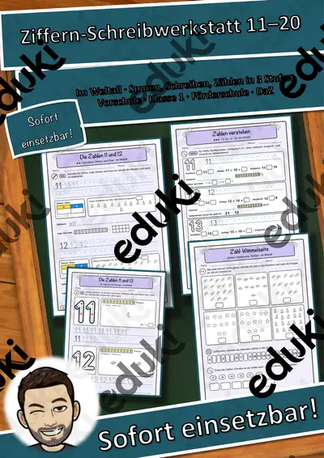

Lesespur: Sport und Umwelt: Natursport ohne Spuren – Lesespurgeschichte mit Rätseln (Klasse 9)
Sport und Umwelt – Natursport ohne Spuren – Lesespurgeschichte Sport (Klasse 9)Schick deine Klasse auf eine Lesespur durch einen Naturpark! „Natur ist doch für alle da – da kann man doch fahren, wo man will“, meint Jonte. Beim Outdoor-Projekttag der 9b im Naturpark Steinbachtal zeigt Rangerin Toni Hartl ihm und Yara, wie man Sport in der Natur treibt, ohne Spuren zu hinterlassen. Schon an der Bushaltestelle geht es um die Anreise – denn dort entsteht oft der größte Teil der Umweltbelastung. An der Schutzgebietstafel lernen die Jugendlichen Wegegebot, Ruhezonen und Brutzeit kennen, an der Bikestrecke die Regeln fürs Mountainbiken. Am Kletterfels erfahren sie, warum ein Teil gesperrt ist, an der Holzbrücke, warum Steintürme im Bach Schaden anrichten, und am Kanusteg, warum Boote Abstand zum Schilf halten. Am Rastplatz dreht sich alles um Müll und Feuer – und am Beobachtungsturm um den richtigen Abstand zu Wildtieren. Dosi, die kleine Mehrweg-Brotdose, ist immer dabei. Am Ende jedes Abschnitts verrät ein Hinweis den nächsten Ort auf dem Plan – nur wer genau liest, findet den Weg und sammelt alle geheimen Buchstaben zum Lösungswort.
Die perfekte Lesespur für den SPORTUNTERRICHT der 9. Klasse – ideal vor einem Wandertag, einer Klassenfahrt oder Outdoor-Tagen, für Sporttheorie, Regenstunden, Vertretungsstunden oder fächerübergreifend mit Erdkunde und Biologie: Sie verbindet sinnentnehmendes Lesen mit sachlich-neutralen Regeln für umweltgerechten Natursport (Mountainbike, Klettern, Kanu, Wandern). Das Material ist SOFORT EINSETZBAR und in DREI DIFFERENZIERUNGSSTUFEN (leicht ★ / mittel ★★ / schwer ★★★) angelegt.WICHTIG: Das komplette Material ist sowohl in FARBE als auch in SCHWARZ-WEISS enthalten – ideal zum Sparen von Druckkosten.DAS IST ENTHALTEN
- Lesespurgeschichte in 3 Niveaus (leicht, mittel, schwer)
- farbiger Naturparkplan als Suchkarte
- Hörverstehen mit QR-Code zur MP3 (selbstständiges Hören mit Kopfhörern)
- vier Aufträge auf dem Weg: ein Quiz, eine Zuordnung, eine Rechenaufgabe und ein Steckbrief
- Rätselseite (Wörter-Suchsel + Fragen zu Natursport und Umwelt)
- Ausmalbild zum Thema (Kanufahren auf dem See)
- ausführliches Lösungsblatt für die Lehrkraft
- alles zusätzlich als komplette Schwarz-Weiß-VarianteSO GEHT DIE LESESPURDie Jugendlichen lesen ab START, finden im Text den nächsten Ort, suchen ihn auf dem Plan und lesen bei dieser Station weiter. An jeder richtigen Station gibt es einen Buchstaben. Eingeplante Sackgassen (Parkplatz, Kiosk, Holzstapel, Bienenstand) sind keine Stationen und dienen der Selbstkontrolle. Am Ende werden die gesammelten Buchstaben umgestellt und ergeben ein geheimes Lösungswort. (Die Lösungen sind selbstverständlich nur im Lösungsblatt für die Lehrkraft enthalten.)INHALTLICHER SCHWERPUNKTAnreise und CO₂ (Bus, Bahn, Rad, Fahrgemeinschaften), Betretungsrecht und Naturschutzgebiet, Wegegebot und Ruhezonen, Brut- und Setzzeit, Regeln fürs Mountainbiken (freigegebene Wege, Bodenerosion, Vorrang für Fußgänger, Helm), Felsklettern (Kletterzonen, Brutsperren, Felskopf-Vegetation, Magnesia), Bach und Ufer (keine Steintürme, Larven und Fischlaich), Kanufahren (Einstiegsstellen, Schilfgürtel, Niedrigwasser, Schwimmweste), Müll und Verrottungszeiten, Feuerverbot im Wald, richtiges Verhalten gegenüber Wildtieren (Abstand, Dämmerung, Hunde an die Leine).ABGEDECKTER LEHRPLAN (Klasse 9, Sport)
- Sport (LehrplanPLUS Bayern) – Jahrgangsstufe 9: Gegenstandsbereich Freizeit und Umwelt – Sport in der Natur umweltgerecht und rücksichtsvoll betreiben, Regeln in Schutzgebieten kennen und einhalten, Auswirkungen des eigenen Sporttreibens einschätzen; Fairness/Kooperation/Selbstkompetenz – Rücksicht auf andere Erholungsuchende.
- Deutsch – Lesen: Sachtexten gezielt Inhalte entnehmen; Zuhören: einem Sachhörtext folgen (Hörverstehen mit MP3).
- Mathematik – Multiplikation und Prozentrechnung in Sachaufgaben.
- Fächerübergreifend / Kompetenzen: Erdkunde (Schutzgebiete, Mensch und Umwelt), Biologie (Lebensräume, Wildtiere), Bildung für nachhaltige Entwicklung.
Geeignet für Freiarbeit, Stationenlernen, Vertretungsstunden, Wochenplan, Projekttage, Sporttheorie bei Hallenbelegung und Distanzunterricht. Klassenstufe 9.
Ähnliche Materialien

Umwelt – Hörverstehen mit Lückentext (interaktiv)

Umwelt Lückentext mit Wortspeicher Hörverstehen und Suchsel

Lesespur: Auf den Spuren der Alpen – Lesespurgeschichte mit Rätseln (Klasse 5)

Lesespur: Die Umwelt-Detektive – Lesespurgeschichte mit Rätseln (Klasse 5)

Lesespaziergang: Spuren im Schnee – 3-fach differenziert (★/★★/★★★), Klasse 2–4

Lesespur: Digitale Spuren: Cookies, Tracking und Profile – Lesespurgeschichte mit Rätseln (Klasse 8)
